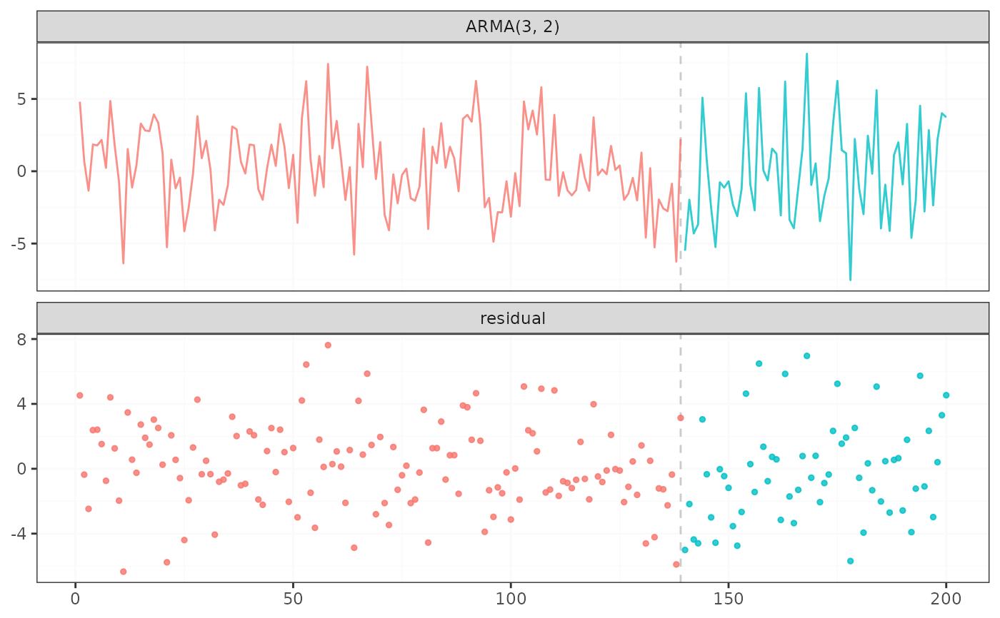

fastcpd_arma() and fastcpd.arma() are
wrapper functions of fastcpd() to find change points in
ARMA(\(p\), \(q\)) models. The function is similar to fastcpd()
except that the data is by default a one-column matrix or univariate vector
and thus a formula is not required here.
Arguments
- data
A numeric vector, a matrix, a data frame or a time series object.
- order
A vector of length two specifying the order of the ARMA model.
- ...
Other arguments passed to
fastcpd(), for example,segment_count.
Value
A fastcpd object.
Examples
# \donttest{
set.seed(1)
n <- 200
w <- rnorm(n + 3, 0, 3)
x <- rep(0, n + 3)
for (i in 1:150) {
x[i + 3] <- 0.1 * x[i + 2] - 0.3 * x[i + 1] + 0.1 * x[i] +
0.1 * w[i + 2] + 0.5 * w[i + 1] + w[i + 3]
}
for (i in 151:n) {
x[i + 3] <- 0.3 * x[i + 2] + 0.1 * x[i + 1] - 0.3 * x[i] -
0.6 * w[i + 2] - 0.1 * w[i + 1] + w[i + 3]
}
result <- suppressWarnings(
fastcpd.arma(
data = x[3 + seq_len(n)],
order = c(3, 2),
segment_count = 3,
lower = c(rep(-1, 3 + 2), 1e-10),
upper = c(rep(1, 3 + 2), Inf),
line_search = c(1, 0.1, 1e-2),
beta = "BIC",
cost_adjustment = "BIC",
trim = 0.025
)
)
summary(result)
#>
#> Call:
#> fastcpd.arma(data = x[3 + seq_len(n)], order = c(3, 2), segment_count = 3,
#> lower = c(rep(-1, 3 + 2), 1e-10), upper = c(rep(1, 3 + 2),
#> Inf), line_search = c(1, 0.1, 0.01), beta = "BIC", cost_adjustment = "BIC",
#> trim = 0.025)
#>
#> Change points:
#> 142
#>
#> Cost values:
#> 338.7487 147.9773
#>
#> Parameters:
#> segment 1 segment 2
#> 1 0.61089594 1.2007331
#> 2 -0.06119103 -0.7200918
#> 3 -0.13783777 -0.1553878
#> 4 -0.43066172 -1.4622728
#> 5 0.27766353 0.9529438
#> 6 6.89926381 9.3102156
plot(result)

# }